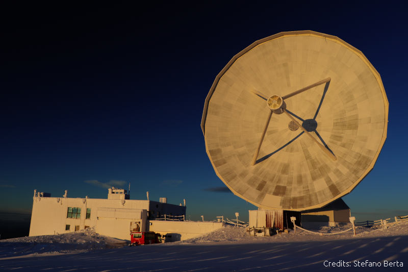

Jean Tedros homepage
Jean TEDROS
Institut de Radioastronomie Millimétrique (IRAM)
7, Av. divina pastora, local 20
18012 Granada
Spain
e-mail: jtedros[at]iram[dot]es
I'm currently a software engineer working at the 30-meter millimeter radio
telescope in the spanish Sierra Nevada. The main focus of my work is the
software upgrade related to the refurbishment of the telescope's control
system planned for 2023.

Home
About
Research
Blog